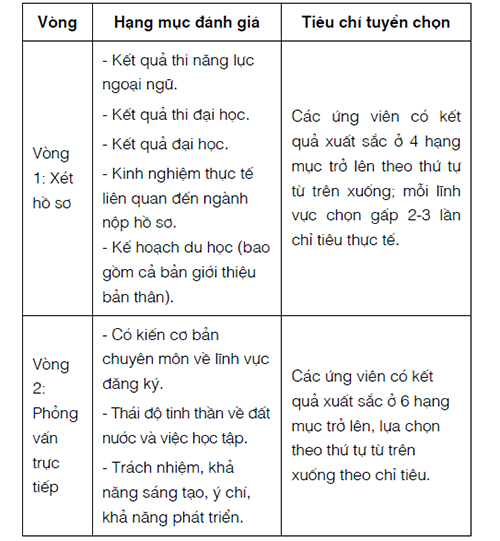
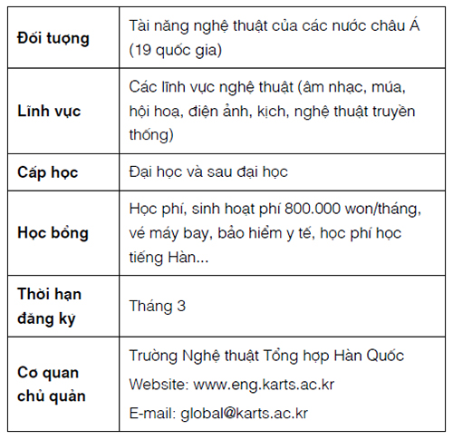

Thông Tin Về Học Bổng
Học bổng Chính phủ Hàn Quốc (sau đại học, đại học, nghiên cứu)
Mục đích: Tạo cơ hội cho sinh viên quốc tế học tập tại các cơ sở giáo dục đại học của Hàn Quốc, qua đó thúc đẩy trao đổi giáo dục quốc tế và tình hữu nghị giữa các quốc gia.
Các bậc học:
Bậc đại học: Các ngành học theo chương trình 4 năm ở các trường đại học. Không bao gồm các ngành học kéo dài trên 4 năm như y, kiến trúc.
Bậc sau đại học: Các chương trình học Thạc sĩ, Tiến sĩ ở các trường đại học. Trong trường hợp nhập học ở các trường cao học chuyên môn có học phí vượt quá 10 triệu won/năm, sinh viên phải nhận được học bổng hỗ trợ từ trường.
Nghiên cứu: Giáo sư trao đổi và sau Tiến sĩ thực hiện đề tài nghiên cứu tại các cơ quan nghiên cứu ở Hàn Quốc (bao gồm các trường đại học).
Chỉ tiêu: đại học 120 người, sau đại học 580 người (thay đổi tùy theo ngân sách).
- Quy trình tuyển chọn:

- Các hạng mục cấp học bổng

Dưới 25 tuổi tính đến ngày mùng 1 tháng 3 của năm ứng tuyển. Điều kiện:
Tốt nghiệp trung học phổ thông tính đến ngày mùng 1 tháng 3 của năm ứng tuyển.
Dưới 25 tuổi tính đến ngày mùng 1 tháng 9 của năm ứng tuyển.
Tốt nghiệp đại học hoặc thạc sĩ tính đến ngày mùng 1 tháng 9 của năm ứng tuyển.
Cả ứng viên và bố mẹ ứng viên đều phải là người nước ngoài.
Ứng viên có hai quốc tịch trong đó có quốc tịch Hàn Quốc không được coi là người nước ngoài.
Có đủ sức khoẻ để theo học dài hạn ở Hàn Quốc.
Người đang theo học hoặc đã tốt nghiệp đại học, sau đại học ở Hàn Quốc không được nộp hồ sơ.
Tuy nhiên, sinh viên đã nhận học bổng Chính phủ Hàn Quốc trước đó và tiếp tục được đại sứ quán đề cử có thể tái nộp hồ sơ (một lần duy nhất).
Điểm trung bình chung tích lũy (GPA) ở cấp học cuối cùng trên 80%.
Cách thức nộp hồ sơ:
- Thông tin tham khảo:
Thông tin chi tiết về hồ sơ và các vấn đề liên quan được đăng tải hằng năm qua mục (Scholarships – GKS Notice) trên trang web: www.kgspniied@korea.kr
Hỗ trợ sinh viên trao đổi xuất sắc
Mục đích: Tăng cường mức độ cạnh tranh của các trường đại học trong nước thông qua việc đẩy mạnh số lượng học sinh/sinh viên trao đổi, thúc đẩy du học Hàn Quốc phát triển thông qua việc tạo cơ hội cho du học sinh trao đổi hiểu thêm về văn hóa và giáo dục Hàn Quốc.
Thời gian cấp học bổng: 10 tháng (2 kỳ) hoặc bốn tháng (1 kỳ).
Chỉ tiêu: Khoảng 200 sinh viên quốc tế (thay đổi tùy theo ngân sách).
Học bổng

Điều kiện nộp hồ sơ (Phải đáp ứng tất cả các điều kiện dưới đây):
Quy trình tuyển chọn:
Hỗ trợ sinh viên du học tự túc xuất sắc
Vào trang thông tin tổng hợp du học Hàn Quốc (www.studyinkorea.go.kr) để đăng ký => Nộp hồ sơ online => In đơn đăng ký => Nộp cho trường đại học => Trường đại học tuyển chọn lần 1, đưa ra danh sách đề cử ứng viên => Viện Giáo dục Quốc tế xem xét và đưa ra quyết định.
Điều kiện nộp hồ sơ: Các ứng viên phải đáp ứng được tất cả các điều kiện dưới đây:
Sinh viên đã nhận học bổng của chính phủ Hàn Quốc, học bổng của trường đại học hay học bổng của các tổ chức, doanh nghiệp (Sinh hoạt phí một tháng trên 300.000 won) không được nộp hồ sơ.
Học bổng cho sinh viên ưu tú của một số nước
Mục đích: Mời các sinh viên ưu tú – những người lãnh đạo tương lai của các quốc gia đến Hàn Quốc để học và trải nghiệm văn hóa, qua đó tăng cường sự hiểu biết về Hàn Quốc, góp phần thúc đẩy du học Hàn Quốc phát triển.
Đối tượng: Tổng 120 người (thay đổi tùy theo ngân sách).
Thời gian: 11 ngày.
Nội dung: Tham gia các khóa học đặc biệt, tham quan các trường đại học, di tích văn hóa, các doanh nghiệp, ở homestay...
Kinh phí: Vé máy bay hai chiều, tiền tiêu vặt, phí nghiên cứu... Chính phủ Hàn Quốc chi trả. Phí xin cấp visa, phí giao thông đi lại trong nước cá nhân tự trả.
Học bổng cho sinh viên ngành khoa học, kỹ thuật các nước ASEAN
Mục đích: Mời sinh viên các ngành khoa học, kỹ thuật của các nước ASEAN đến Hàn Quốc, thăm các trường đại học khoa học, kỹ thuật, các nhà máy công nghiệp phát triển, qua đó thu hút nhân tài đến với Hàn Quốc.
Thời gian: 5 tuần (Khoảng tháng 7-8).
Chỉ tiêu: 120 người (Thay đổi tùy theo ngân sách).
Học bổng: Vé máy bay, chi phí ăn ở, bảo hiểm y tế và các chi phí khác.
Cách thức nộp hồ sơ: Nộp hồ sơ trực tiếp tới các cơ quan được chọn tham gia chương trình. Danh sách các cơ quan tham gia chương trình được công bố vào tháng 3 hằng năm.
Điều kiện ứng tuyển: Ứng viên phải đáp ứng được tất cả các điều kiện dưới đây
Tiêu chí xét tuyển: Kết quả học tập, năng lực tiếng Hàn hoặc tiếng Anh, bài luận giới thiệu bản thân, thư giới thiệu...
Tuyển chọn sinh viên học bổng ngân sách nhà nước
Mục đích: Đào tạo nhân tài mang tính toàn cầu ở những lĩnh vực cần cho sự phát triển chiến lược của quốc gia.
Đối tượng: Thạc sĩ, Tiến sĩ, nghiên cứu chuyên sâu.
Thời gian: Cấp học bổng 2-3 năm (2 năm đối với các nước Mỹ – Canada – Anh; 3 năm đối với các quốc gia khác).
Học bổng: Học bổng bao gồm toàn bộ chi phí như học phí, sinh hoạt phí, bảo hiểm... cùng vé máy bay hai chiều được hỗ trợ riêng.
Chỉ tiêu: 40 người (tuyển chọn thường 25 người, tuyển chọn đặc biệt 8 người, chuyên gia kỹ thuật 7 người thay đổi tùy theo ngân sách).
Điều kiện:
Quy trình nộp hồ sơ: Sau khi kiểm tra điều kiện ứng tuyển và quy trình tuyển chọn, chuẩn bị hồ sơ và nộp hồ sơ trực tiếp hoặc thông qua trường đại học theo lịch trình quy định.
Quy trình tuyển chọn:

Sinh viên trúng tuyển sẽ được giáo dục định hướng trước khi được gửi đi du học.
Kết thúc quá trình học tập, sinh viên sẽ phải báo cáo kết quả học tập.
Học bổng của các trường đại học
Rất nhiều trường đại học ở Hàn Quốc có các chương trình học bổng đa dạng dành cho du học sinh. Đại đa số các trường đại học, tùy thuộc theo điểm số sẽ trao các suất học bổng từ 30% đến 100% cho du học sinh. Thông tin về học bổng của các trường đại học có thể tham khảo trên website của trường hoặc như dưới đây.
Học bổng dành cho sinh viên quốc tế ở các trường đại học (tư thục, ở khu vực thủ đô)

Học bổng dành cho sinh viên quốc tế ở các trường đại học (tư thục, ở ngoài khu vực thủ đô)

Các thông tin trên chỉ mang tính chất tham khảo. Để biết thêm thông tin chi tiết về chương trình học bổng của các trường đại học bạn nên liên hệ trực tiếp với các trường để được giải đáp.
Cách tìm học bổng trường:
Bạn đánh tên trường vào Google => vào web trường => vào mục Admission Scholarship.
Học bổng của các tổ chức, doanh nghiệp
Học bổng tài năng nghệ thuật châu Á (AMA)

Quỹ hỗ trợ giáo dục phổ thông Hàn Quốc và giao lưu học thuật quốc tế (ISEF)

Quỹ POSCO Cheongam (Học bổng du học Hàn Quốc cho sinh viên các nước châu Á)

Quỹ giao lưu quốc tế Hàn Quốc (Chương trình nghiên cứu dành cho sinh viên sau đại học chuyên ngành Hàn Quốc)

30 trường đại học hàng đầu Hàn Quốc
Dưới đây tôi sẽ cung cấp danh sách 30 trường đại học hàng đầu Hàn Quốc (thời gian cập nhật: tháng 9/2018) 12 .
12
Bạn có thể tra cứu thông tin cụ thể tại địa chỉ: www.webometrics.info/en/Asia/Republic%20Of%20Korea.

Có một điều cần lưu ý là bảng xếp hạng này có thể thay đổi theo thời gian nên các bạn cần truy cập vào trang web để cập nhật.
Nếu đang băn khoăn chọn trường, chọn ngành, bạn có thể tham khảo www.studyinkorea.go.kr là trang web cung cấp khá đầy đủ về thông tin du học tại Hàn Quốc theo từng khu vực, từng loại trường công lập hay dân lập, học bổng...